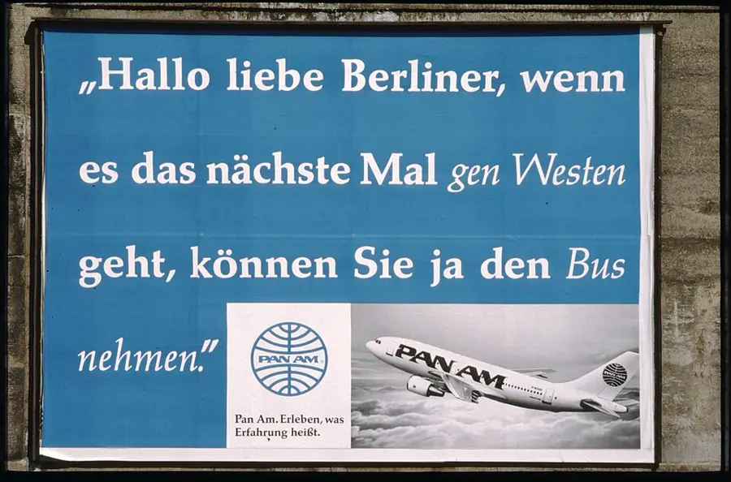

대표 로고대표 브랜드 마크
대표 로고대표 브랜드 마크에어버스 Airbus
에어버스(Airbus)는 프랑스, 독일, 영국, 스페인, 네덜란드의 다국적 항공기업이다. 민항기 개발 및 제조가 주요 사업이며 국방항공부서와 헬리콥터 부서도 두고 있다.
최종 업데이트
에어버스는 어떤 브랜드인가
에어버스는 프랑스, 독일, 영국, 스페인, 네덜란드의 다국적 항공기업이다. 핵심 부서는 3개이며, 주요 사업은 민항기 개발 및 제조이지만 국방항공부서와 헬리콥터 부서도 있다.
2019년부터 에어버스는 세계에서 가장 큰 항공기 제조사이자 헬리콥터 제조사이다. 조립공장과 사무실은 프랑스, 독일, 스페인, 영국에 있고 최근에는 미국, 캐나다, 중화인민공화국에도 시설을 추가했다.
본부는 네덜란드 레이던으로 등록했으나 실질적인 일일업무는 프랑스 툴루즈 인근의 블라냐크에서 수행한다. 유로 스톡스 50 주가 지수의 구성원이며 주식은 유로넥스트 파리, 프랑크푸르트 증권거래소, 마드리드 증권거래소에서 거래한다.
에어버스는 어떻게 시작되고 성장했나
현재 에어버스 SE는 1970년 에어버스 인더스트리 GIE 컨소시엄을 결성한 이후 유럽 항공 우주 산업을 통합한 산물이다. 2000년 프랑스의 아에로스파시알, 독일의 DASA, 스페인의 CASA를 합병해 유럽 항공 방위 우주 회사(EADS)를 설립했다.
2001년 에어버스 인더스트리 GIE는 주식회사 에어버스 SAS로 개편되었고, 2006년 EADS는 BAE 시스템즈의 에어버스 주식 나머지 20%를 인수했다. EADS NV는 2014년과 2015년에 각각 Airbus Group NV와 SE로 이름을 변경했고, 지주회사는 2017년 4월에 현재 이름인 에어버스 SE로 명칭을 변경했다.
에어버스의 브랜드 아이덴티티는 무엇인가
1970년 컨소시엄에서 출발해 유럽 항공 우주 산업을 통합한 다국적 항공기업이며, 세계 최초 광폭동체 비행기 A300을 처음 선보인 민항기 제조사이다.
에어버스의 대표 제품과 서비스는 무엇인가
주요 사업은 민항기 개발 및 제조이며, 국방항공부서와 헬리콥터 부서도 두고 있다. 민항기 시리즈는 1972년 10월 28일에 초도 비행을 한 A300으로 시작하며, A300은 에어버스의 첫 민항기이자 세계 최초 광폭동체 비행기였다.
군용기종으로는 에어버스 A400M, A330 MRTT, A310 MRTT가 있다. 수송기종으로는 에어버스 벨루가(2026년 퇴역)와 에어버스 벨루가 XL이 있다.
개발 및 시험 예정 기종으로는 수소형 항공기인 ZEROe가 있으며 2035년 도입 예정이다.
에어버스는 지금 어떤 상태인가
2019년부터 세계에서 가장 큰 항공기 제조사이자 헬리콥터 제조사이다. 본부는 네덜란드 레이던으로 등록되어 있으며, 유로 스톡스 50 주가 지수의 구성원이다.
2017년 1월 에어버스 그룹 SE 내 에어버스 SAS 부문의 지배구조 문제로 모기업과 자회사의 집행위원회를 해산했고, 해당 기업은 별도 법적 주체로 유지했다. 'SE'는 Societas Europaea의 약자이다.
에어버스 로고는 어떻게 변해왔나
대표 로고대표 브랜드 마크사진으로 보는 에어버스의 역사

자주 묻는 질문
에어버스는 어느 나라 브랜드인가요?
에어버스는 네덜란드의 에너지·산업재 브랜드입니다.
에어버스는 언제 설립되었나요?
에어버스는 1998년 설립되었습니다.
에어버스의 브랜드 아이덴티티는 무엇인가요?
1970년 컨소시엄에서 출발해 유럽 항공 우주 산업을 통합한 다국적 항공기업이며, 세계 최초 광폭동체 비행기 A300을 처음 선보인 민항기 제조사이다.
에어버스의 대표 제품은 무엇인가요?
주요 사업은 민항기 개발 및 제조이며, 국방항공부서와 헬리콥터 부서도 두고 있다.
에어버스는 현재 어떤 상태인가요?
2019년부터 세계에서 가장 큰 항공기 제조사이자 헬리콥터 제조사이다.
에어버스의 본사는 어디에 있나요?
에어버스의 본사는 레이던에 있습니다(위키데이터 기준).
에어버스의 공식 웹사이트는 어디인가요?
에어버스의 공식 웹사이트는 https://airbus.com 입니다.
출처와 검증
에어버스 관련 참고: 공식 웹사이트 · 위키데이터 Q2311 · 한국어 위키백과 · 영어 위키백과. 브랜드명은 한글과 원어를 함께 표기하되 데이터에 없는 표기는 만들지 않습니다. 기원 국가·설립연도는 검수된 정의문에서 확인된 값을 우선하고, 없을 때만 공식 웹사이트 URL이 일치하는 위키데이터 개체의 값을 씁니다. 탄생일의 월·일은 위키데이터, 위키백과 정보상자, 본문 가운데 같은 연월로 확인되는 값만 싣고, 출처끼리 다르면 싣지 않습니다. 위키데이터 값은 2026-11-11 기준입니다.